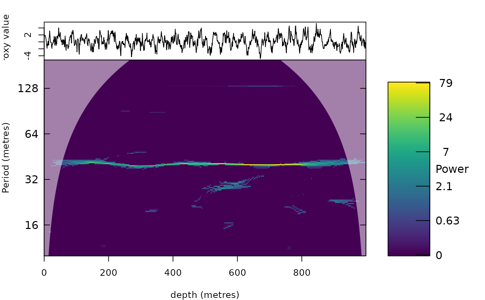

Significance of synchrosqueezed (and other) scalograms against autocorrelated noise
Source:R/sst_significance.R
sst_significance.RdTests which parts of a synchrosqueezed transform (analyse_wavelet_sst,
analyse_superlet_sst, analyse_conceft) are unlikely to be produced by noise. The noise of
the record is modelled by an autoregressive process (order chosen by AIC, ar_order_max); optionally its variance
may change along the record (a moving standard deviation of the innovations, as in the time-varying AR bootstrap of
Chen and Wu, 2025). n_sim noise records are simulated and transformed with exactly the same settings as the
original. For every period the (1 - alpha) quantile of the noise power, pooled over all positions, gives the
threshold; with local_variance = TRUE it is scaled by the local noise variance. Coefficients below the
threshold are set to zero in the returned object, so only significant ridges remain in plots and tracking.
Under the null hypothesis (no cycles) the record itself is used as the noise model; this is conservative when strong cycles are present, because they increase the variance attributed to noise.
Usage
sst_significance(
wavelet,
n_sim = 50,
alpha = 0.05,
ar_order_max = 5,
local_variance = FALSE,
window = NULL,
seed = 1,
verbose = FALSE
)Arguments
- wavelet
Transform to test (required, no default): the list returned by
analyse_wavelet_sst,analyse_superlet_sstoranalyse_conceft(it must contain thetransformandsettingselements, which are used to transform the noise records with exactly the same settings).- n_sim
Number of simulated noise records (integer, > 0); more simulations give a more stable threshold but take proportionally longer.
Default=50.- alpha
Significance level (numeric, between 0 and 1): the threshold of every period is the (1 -
alpha) quantile of the pooled noise power.Default=0.05.- ar_order_max
Maximum order of the autoregressive noise model (integer, >= 1); the order is chosen by AIC with
ar(Yule-Walker) up to this value.1gives the classical red noise (AR1).Default=5.- local_variance
Let the noise variance change along the record (logical): the simulated noise is scaled by the moving standard deviation of the AR innovations and the threshold by the local noise variance.
Default=FALSE.- window
Length of the moving window of the local variance, in depth/time units (numeric, > 0); only used with
local_variance = TRUE.NULLuses twice the longest period of the transform.Default=NULL.- seed
Seed of the random number generator (integer) used for the noise simulations, so that the result can be reproduced; the previous random state is restored afterwards.
Default=1.- verbose
Print a message after every simulation (logical, TRUE or FALSE).
Default=FALSE.
Value
The input object with Power, Wave, Ampl and Power.avg restricted to the
significant coefficients, and the extra elements significant (logical matrix), Power_all (the
unmasked power), threshold_period (noise power threshold per period) and alpha.
References
Chen, Z., Wu, H.-T., 2025. Uncertainty quantification of synchrosqueezing transform under complicated nonstationary noise. arXiv:2506.00779.
Torrence, C., Compo, G.P., 1998. A practical guide to wavelet analysis. Bulletin of the American Meteorological Society 79, 61-78.
Examples
# \donttest{
z <- 0:999
x <- sin(2 * pi * z / 40) + as.numeric(arima.sim(list(ar = 0.7), 1000))
s <- analyse_wavelet_sst(data.frame(z, x), lowerPeriod = 10, upperPeriod = 200, dj = 1 / 40)
sig <- sst_significance(s, n_sim = 20)
plot_wavelet(sig)

# }